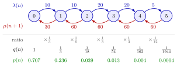

Stationary-Probability Recursion¶
Method¶
Let be the number of jobs in a queueing or inventory system in which jobs arrive and depart one at a time. Assume that the long-run limits defining the time-average probabilities , the state-dependent arrival rates and the departure rates (the rate at which jobs leave while are present) exist. When arrivals can be blocked, is replaced everywhere by the entry rate . Given for and for , the method has three steps.
Step 1, recursion. The level-crossing equation gives
and therefore
Step 2, normalization. Because the add up to one,
Step 3, performance measures. The time-average number of jobs and the fraction of time with at least jobs are and .
For numerical work, set , compute , and divide by , so that and . An infinite state space is truncated at a level so high that the omitted weights are negligible.
Interpretation¶
The recursion turns local information, how fast the system moves up from and down from , into the whole stationary distribution. Each step across one level multiplies by the ratio of the upward to the downward rate; only is unknown, and the requirement that the probabilities add up to one fixes it.

The figure is the pizza stand of Example 1. Above each gap stands the arrival rate , below it the service rate , and their ratio is the factor that carries the weight to . The weights add up to , and dividing by gives the green row , which starts at .
Three conditions matter. Jobs must move one at a time, because otherwise a level can be crossed by a jump that skips it and the level-crossing equation gains extra terms (the batch-service queue in balance equations is an example). The ratio uses , not , since the departure that crosses the level between and starts in state . Finally, the normalizing sum must be finite: when it diverges, the long-run fraction of time in every state is zero and there is no stationary distribution. A constant ratio turns the sum into a geometric series, which is finite only for .
A common slip is to use the arrival rate in a state where arrivals are blocked; only jobs that enter move the system up, so belongs in the recursion.
Key Results¶
- For single-unit arrivals and departures, , with fixed by normalization (Section 4.6 of the notes).
- The recursion yields a probability distribution only when the normalizing sum is finite. With and this is the condition of the queue.
- With blocking, . If , then for , the sum is finite, and no stability condition is needed, as in the queue and the Erlang B model.
- Once is known: , , and the average arrival rate is . With Little's law these give and .
- When for all , arrivals see the time-average distribution, (Theorem 4.5.2 of the notes); Poisson arrivals guarantee this by PASTA.
- All queues of the birth-death family, the , , , and queues, are special cases with particular choices of and .
Examples¶
1. Pizza stand (Exercise 5.2.8). Arrival rates per hour are and for . The oven bakes two pizzas at a time, each in 2 minutes, so and for . The recursion gives
with sum , so . Then and the average arrival rate is per hour. Little's law gives hours minutes. Because depends on , arrivals do not see here.
2. Constant ratio and the normalizing condition. With and every step multiplies by , so . For , and . For every weight equals , is infinite, and no choice of makes the probabilities add up to one: the recursion has no stationary solution.
3. The recursion in Python. The function below implements the three steps; with the rates of Example 1 it reproduces the probabilities above.
def stationary_probs(lam, mu, n_max):
q = [1.0] # unnormalized weights, q(0) = 1
for n in range(n_max):
q.append(q[-1] * lam(n) / mu(n + 1))
G = sum(q) # G = 1/p(0)
return [x / G for x in q]
lam = lambda n: [10, 10, 20, 20, 5][n] if n < 5 else 0
mu = lambda n: 30 * min(n, 2)
p = stationary_probs(lam, mu, 5)
print([round(x, 4) for x in p]) # [0.7072, 0.2357, 0.0393, 0.0131, 0.0044, 0.0004]
For a queue without blocking, n_max is a truncation level that must be raised until the results no longer change. The oven case of Section 5.2 uses the same idea as a check: raising the capacity from to recovers the results.
Prerequisites¶
Related Concepts¶
- Balance Equations
- Birth-Death Queue
- M/M/1 Queue
- M/M/c Queue
- M/M/1/K Queue
- Erlang B Model
- Poisson Arrivals See Time Averages
Sources¶
- Stochastic Operations Research · Week 4
- N. D. van Foreest, Sample Path Analysis and Simulation of Stochastic Systems, Sections 4.6 and 5.2
Aliases: level-crossing recursion, recursion for the stationary probabilities, stationary distribution of a birth-death queue, product formula for p(n) Keywords: p(n+1) = \lambda(n) p(n) / \mu(n+1), p(0), \lambda(n), \mu(n), \lambda^+(n), G = 1/p(0), normalization, unnormalized weights, truncation of the state space, M(n)/M(n)/1 queue Symbols: infinity, lambda, mu, pi, product, rho, sum
Last updated: 29 October 2026 20:42
Stationary-Probability RecursionBalance EquationsBirth-Death QueueLevel-Crossing EquationState-Dependent Arrival RateTime-Average State ProbabilityM/M/1 QueueM/M/c QueueM/M/1/K QueueErlang B ModelPoisson Arrivals See Time Averages